RGM | ReGM | GMN
Presidente Global
Comunidad internacional de profesionales comprometidos con el desarrollo humano a través de la mentoría.
Ir a la web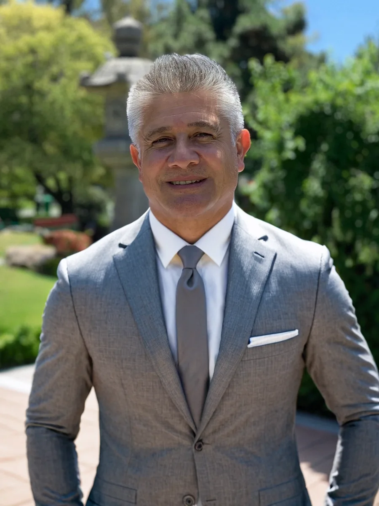
El Mentor de los que lideran.
Sabiduría técnica y humana para transformar organizaciones, proyectos y vidas.
Habiendo creado más de 10 empresas, acompañado a más de 250 emprendedores y escrito 26 libros que viajan desde la rigurosidad electrónica hasta la profundidad de la espiritualidad.
Su enfoque no es solo que el negocio funcione, sino que el líder trascienda. Como CEO de Holding Mentors y Presidente de la Red Global de Mentores, entiende que la verdadera rentabilidad nace de la coherencia entre el sistema técnico y el alma de la organización.
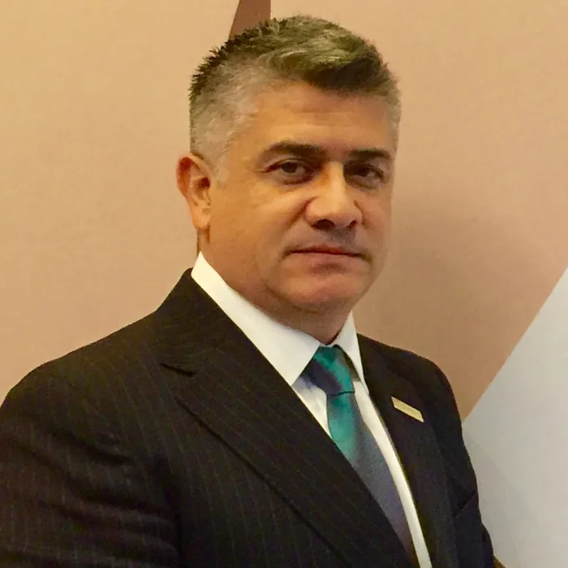
Alejandro Motta se encuentra desarrollando los siguientes cargos en distintas organizaciones internacionales.
Comunidad internacional de profesionales comprometidos con el desarrollo humano a través de la mentoría.
Ir a la webDesarrolladora de proyectos de base tecnológica al servicio de la Mentoría.
Ir a la webOrganización cuya finalidad es fomentar y apoyar la competitividad de las empresas y organizaciones.
Ir a la webGestión de Proyectos de Ingeniería y Construcción en Procesos Industriales.
Ir a la web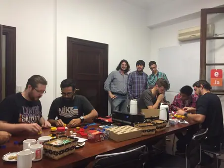
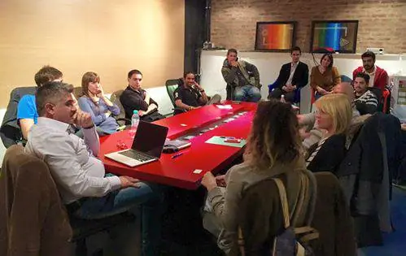
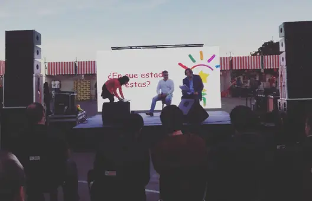
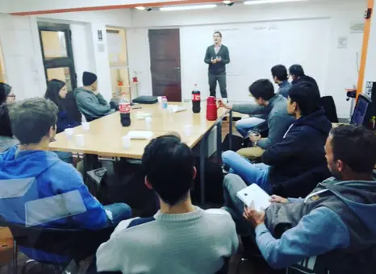
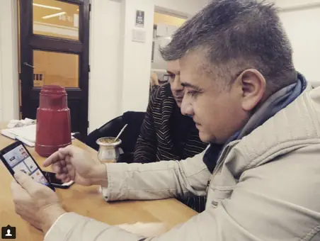
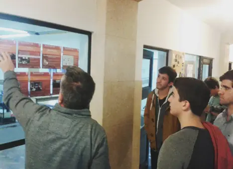
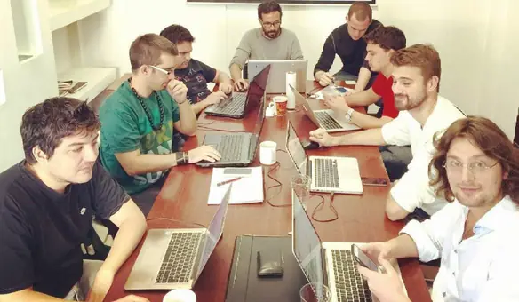
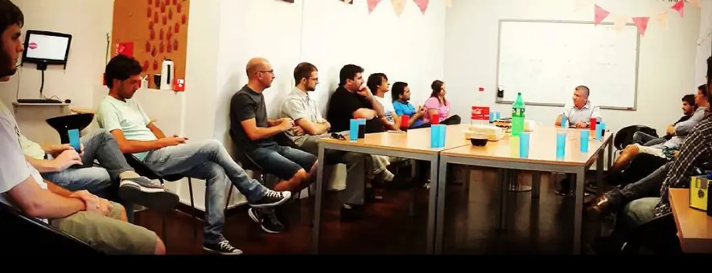
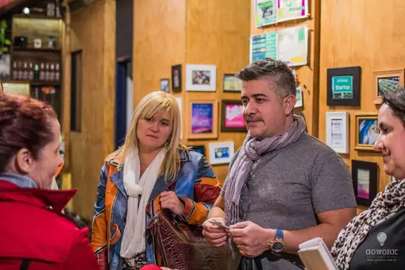
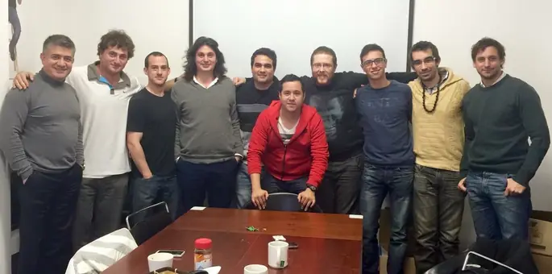
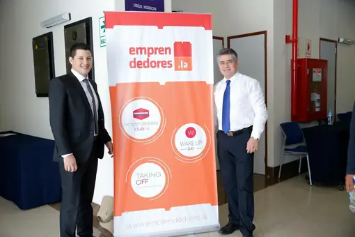
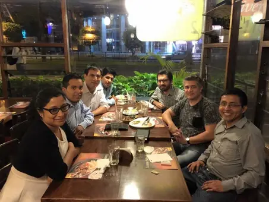
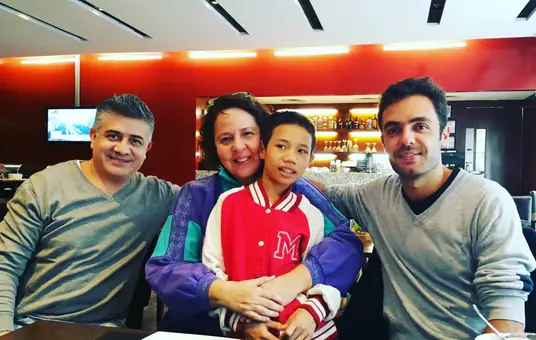
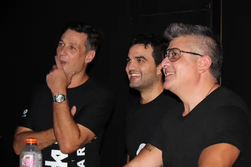
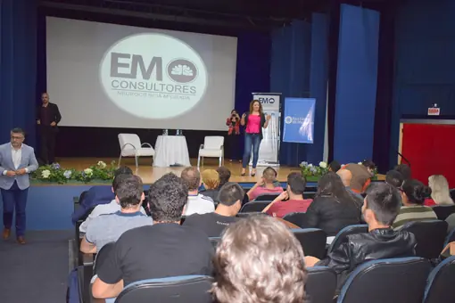
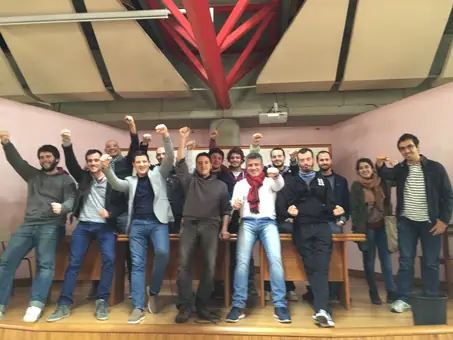
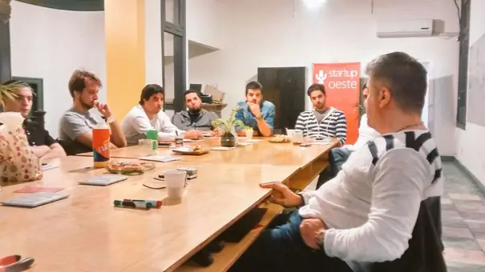
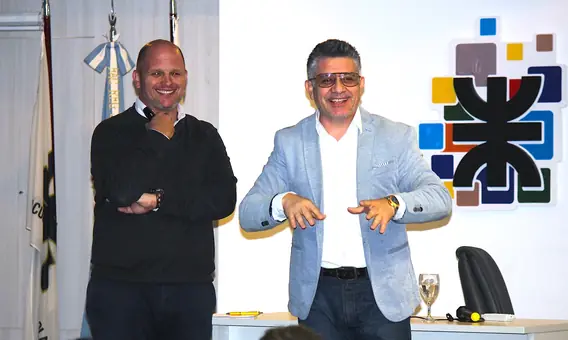
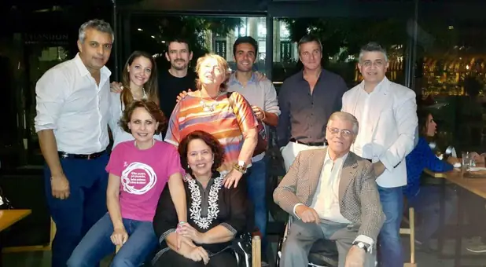
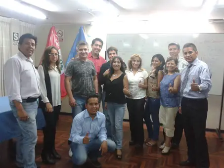
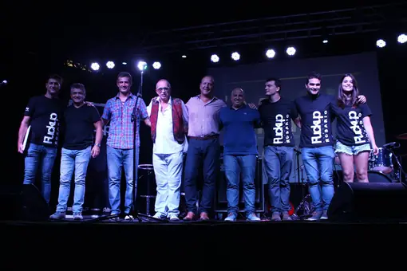
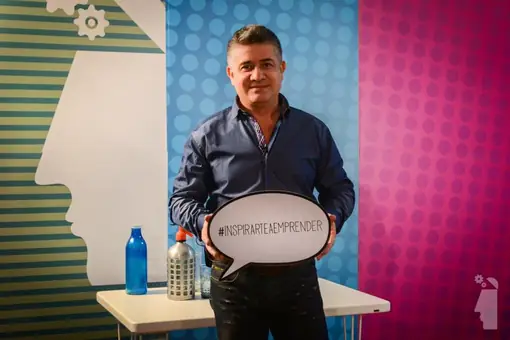
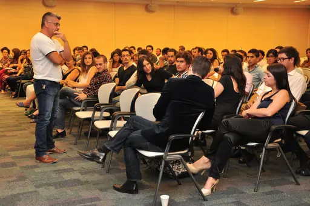
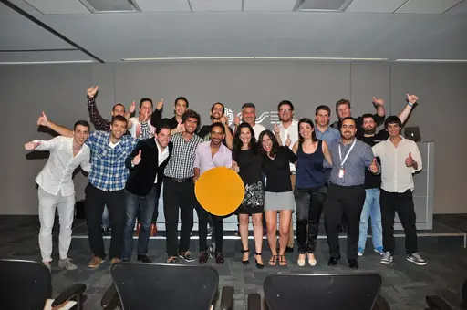
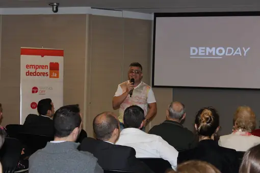
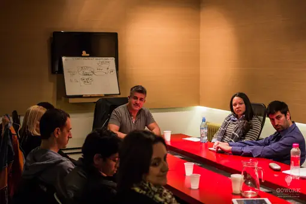
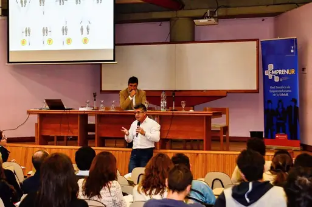
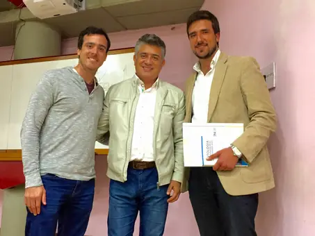
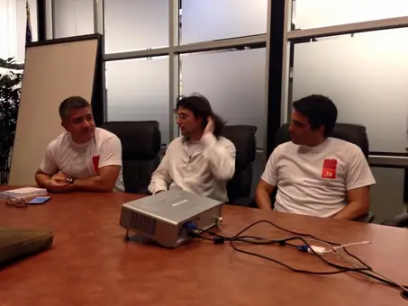
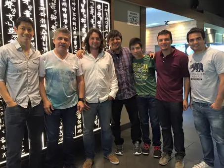
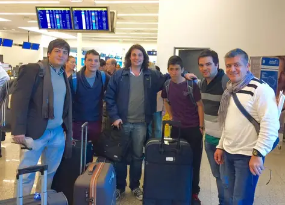
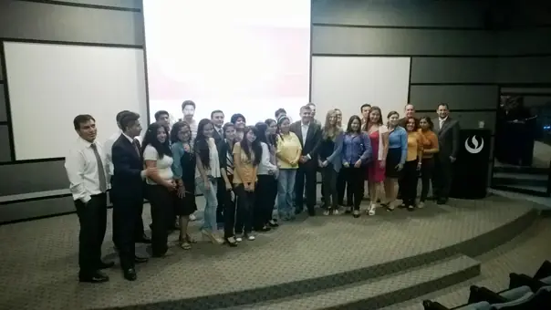
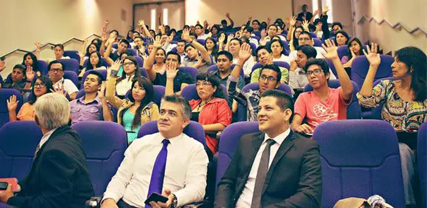
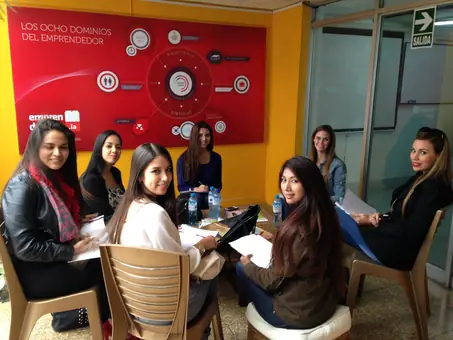
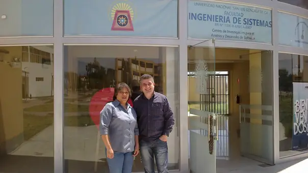
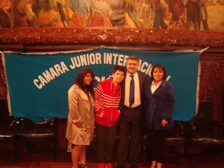
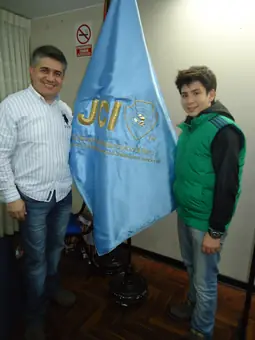
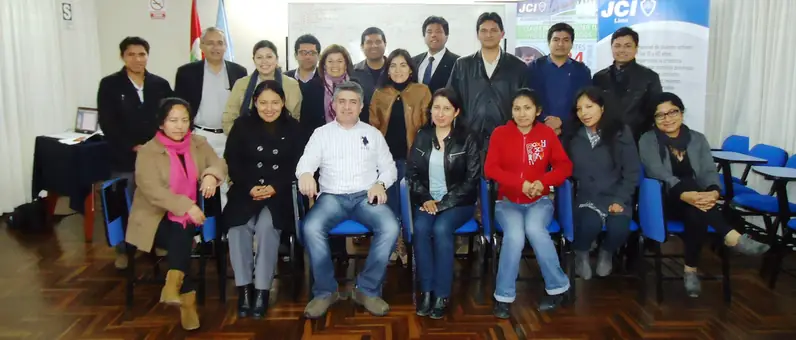
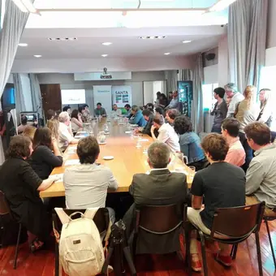
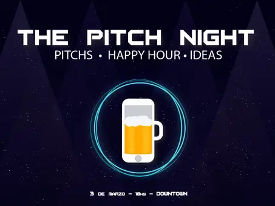
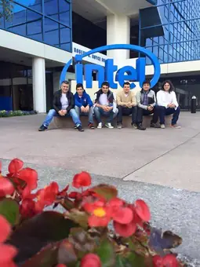
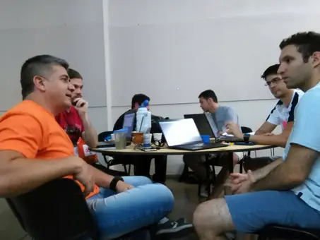
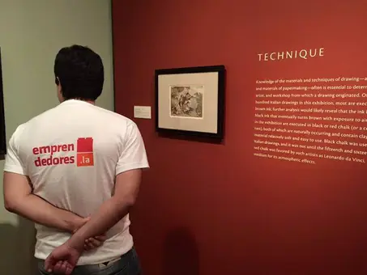
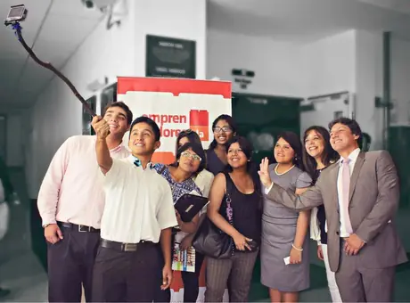
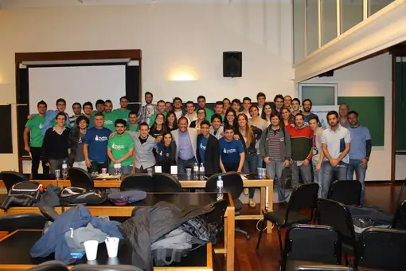
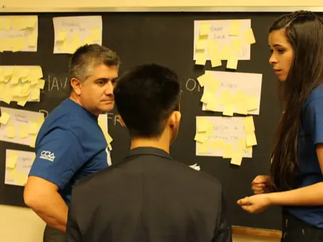
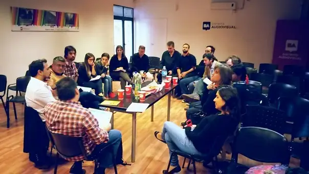
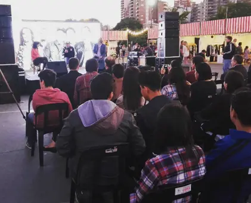
El Desarrollo y Crecimiento de una empresa depende de que tan claro sea su "Propósito", que tan bien se desarrolle su "Estrategia", que tan viable sea su "Plan de Acción" y su coherencia con el "Presupuesto" asignado para tal.
La búsqueda de la maximización del "valor" de la empresa y no la pura "rentabilidad" es donde radica la estrategia de las empresas exitosas.
No tiene sentido ser exitoso en los negocios si a cambio pagas el precio de enfermar tu cuerpo y no ver crecer a tus hijos...
ALEJANDRO MOTTA
En cada obra, ha volcado y continúa volcando sus lecciones aprendidas, abriendo espacios en su mente para nuevas enseñanzas de la vida.
Reúne los conceptos de los 25 libros anteriores y relata el camino que una persona recorre para transformarse en Mentor. Tiene su propia web, con conferencias y talleres a lo largo del próximo año.


Propuestas basadas en sus experiencias laborales.
El éxito de una empresa de servicios no se define por la centralidad de su fundador, sino por la capacidad de construir un sistema que funcione con autonomía, claridad operativa y criterio estratégico.
Acompaño a empresarios de servicios —especialmente en contextos técnicos e industriales— a atravesar momentos críticos de crecimiento, desorden o vulnerabilidad, ayudándolos a tomar decisiones estructurales que ordenen su negocio.
Mi enfoque no busca reemplazar al líder, sino fortalecer su discernimiento para diseñar una organización que no dependa de su presencia constante, sino de procesos, roles y cultura alineados a un propósito sostenible.
La sustentabilidad de una organización no depende de la permanencia de sus líderes, sino de la solidez de su modelo y de la claridad de su propósito compartido.
Desde mi experiencia en la creación y expansión de redes como la Red Global de Mentores, acompaño a cuerpos directivos a estructurar organizaciones que integren impacto social con sostenibilidad económica.
Trabajo en la definición de modelos de gobernanza, fuentes de ingresos y dinámicas de participación que permitan trascender gestiones individuales. El objetivo es construir organizaciones que no solo funcionen, sino que perduren, evolucionen y se conviertan en verdaderos ecosistemas de valor.
El verdadero valor de una incubadora no está en la cantidad de proyectos que alberga, sino en su capacidad para desarrollar emprendimientos que sobrevivan y escalen más allá del acompañamiento inicial.
Con más de una década en el ecosistema emprendedor latinoamericano, acompaño a incubadoras y aceleradoras en el diseño de sus modelos operativos, criterios de selección y sistemas de seguimiento.
Ayudo a estructurar procesos claros y a fortalecer su articulación con el ecosistema (inversores, mentores, instituciones), para que cada proyecto incubado tenga mayores probabilidades reales de consolidarse como empresa sostenible.
En los emprendimientos tecnológicos, la innovación suele estar en la idea, pero el éxito está en la estructura que la sostiene.
Acompaño a emprendedores en etapas iniciales a ordenar su modelo de negocio, definir su propuesta de valor y tomar decisiones clave que impactan en su viabilidad futura.
El foco no está solo en desarrollar tecnología, sino en construir una empresa: con lógica económica, claridad estratégica y fundamentos éticos. Mi intervención busca evitar errores estructurales en los primeros años, facilitando que el emprendimiento no dependa solo del entusiasmo, sino de un diseño sólido y escalable.
La excelencia en proyectos industriales no se mide solo por indicadores de desempeño, sino por la capacidad del sistema de operar con estabilidad, incluso en contextos de incertidumbre o sin la presencia de quienes lo diseñaron.
Con más de 30 años en la gestión de proyectos en industrias complejas, acompaño a Project Managers y equipos técnicos en la estructuración de PMO y modelos de gestión robustos.
Trabajo en la estandarización de procesos, la toma de decisiones estratégicas y la transferencia de criterio operativo, para que los proyectos no solo se ejecuten correctamente, sino que dejen capacidad instalada en la organización.
La verdadera eficiencia de una estructura moderna no se mide por la cantidad de personas que la componen, sino por la capacidad de integrar el criterio humano con la velocidad y precisión de los agentes de inteligencia artificial.
Acompaño a directivos y líderes a rediseñar sus organigramas hacia modelos mixtos, donde cada rol combina la supervisión estratégica y la sensibilidad humana con nodos autónomos de IA que operan en procesos clave.
El enfoque busca trascender la automatización aislada para construir un sistema orgánico y escalable, donde la tecnología no reemplaza el discernimiento, sino que libera el potencial del equipo para concentrarse en la estrategia, la innovación y el valor real.
Un modelo para que el Project Manager pase de ejecutar tareas a decidir con criterio.
Experiencias de transformación para Project Managers, líderes de PMO y equipos de proyecto que necesitan algo que ningún curso de metodología enseña: discernimiento en el momento en que nadie puede decidir por ellos. Basadas en los libros "Mentoría en Gestión de Proyectos" y "Manual del Mentor Experto en Gestión de Proyectos".
No formo Project Managers. La dirección de proyectos ya tiene un cuerpo de conocimiento maduro y bien documentado. Lo que hago es acompañar a quien ya sabe gestionar proyectos, en el momento exacto en que gestionar ya no alcanza y hace falta decidir.
Antes de acompañar, comprender: las variables reales del proyecto (tiempo, dinero, riesgo), de la organización (el sponsor, los decisores informales, la cultura del error) y de la persona que decide.
Detrás de casi toda consulta técnica hay un tránsito de fondo: la convocatoria, la decisión sin óptimo, la legitimidad sin autoridad formal y la responsabilidad que no se puede delegar.
La experiencia vivida es necesaria, pero no suficiente. Para que se convierta en sabiduría hay que reflexionar sobre lo vivido, de modo que lo que se siente y se aprende sea constructivo.
Preguntar, reflejar, confrontar. No se transfiere una respuesta: se amplía el marco desde el cual el propio Project Manager encuentra la suya.
Los criterios profesionales, morales y éticos se desarrollan con intención, porque son la clave para actuar de manera correcta y elegida.
El proceso se sostiene hasta que lo que antes se escalaba ahora se decide solo. El avance se mide en la calidad de las decisiones que otro logra tomar sin nosotros.
Toda sabiduría necesita un método, un modelo que permita transferirla. Eso es lo que distingue una buena práctica de una transferencia profesional.
La experiencia dirigiendo proyectos, transformada en criterio y transferida a otros.
Paradas de planta, procesos industriales, coordinación de múltiples disciplinas y contratistas en tiempos críticos. El criterio no es un plus: es lo que separa una parada exitosa de un desastre operativo.
Dirección de obra, pliegos técnicos, contratistas, certificaciones. El escenario donde más se necesita distinguir un problema de proceso de un umbral personal.
Proceso de mentoría uno a uno, con etapas de comprensión, acompañamiento estratégico e integración. Concluye cuando la autonomía llega y el mentor deja de ser necesario.
Formación estratégica basada en experiencia real para líderes, emprendedores y organizaciones.
Duración: 2 días (12 horas totales) · Entre 8 y 20 participantes. Contratar con al menos seis meses de anticipación.
Un taller intensivo que permite a emprendedores comprender cómo su historia personal impacta en sus decisiones empresariales, fortaleciendo su criterio, liderazgo y capacidad de actuar en contextos de incertidumbre.
Un taller para profesionales que buscan transformar su conocimiento en un negocio estructurado, rentable y escalable, superando la lógica del autoempleo.
Un taller que introduce la mentoría como disciplina estructurada de acompañamiento, basada en la experiencia y orientada al desarrollo del criterio y la toma de decisiones en contextos profesionales.
Para profesionales con trayectoria que desean transformar su experiencia en una forma consciente de acompañar a otros. Tiene su propia web.
Una intervención que invita a reflexionar sobre el valor de la experiencia vivida, su transformación en conciencia y su potencial para convertirse en sabiduría aplicada, abriendo una nueva mirada sobre el legado personal y profesional.
Conocimiento técnico, competencias y habilidades, inteligencia emocional: por qué la tercera es la que casi nunca se atiende. Ideal para convenciones de PMO, jornadas internas o eventos de cámaras del sector.
Una conferencia que invita a repensar el diseño estructural de las organizaciones, integrando la sensibilidad y el criterio humano con la velocidad y autonomía de los agentes de inteligencia artificial. Ideal para congresos de tecnología, eventos corporativos o jornadas de innovación y transformación digital.
Para conferencias o talleres en su organización, escribile desde el formulario de contacto.